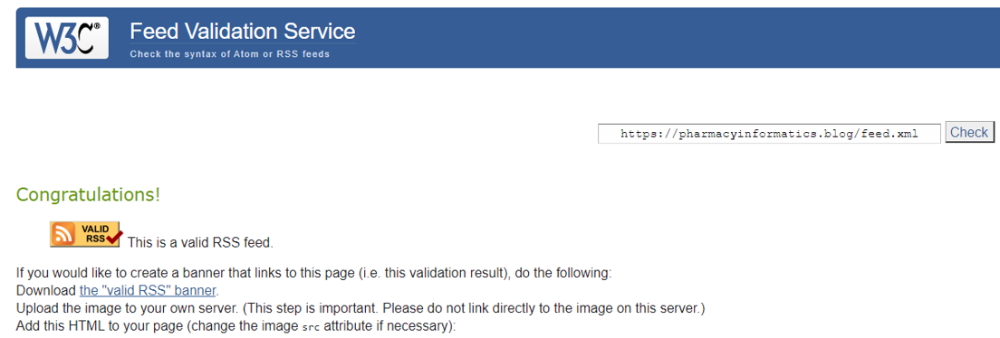
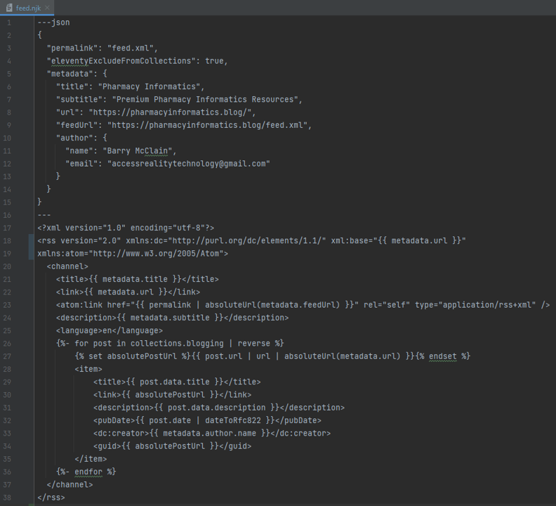

Again, pharmacyinformatics.blog has developed our blog site (aka social media machine) using 11ty and Netlify CMS. The newest feature is this really simple syndication (RSS) feed, which is a fairly easy plugin that can be customized for your site and then validated through the W3C RSS Validator:

RSS is not a super novel thing, but it is a valuable tool for any blog to supply feeds to those that use RSS readers or other tools that combine user specific feeds. So hopefully it is useful to some out there!
A couple of items to note for those that are considering developing a similar build with a static site generator like 11ty:
- For pulling in blog posts, instead of using "for post in collections.all", I applied a tag to my posts of "blogging" to filter out garbage that was collecting in it.
- I also focused on pulling in the post.data.description as the actual description of the blog, not the content. I have seen examples doing this different ways.
But here is what the nunjucks file ended up looking like:

Happy Feeding!